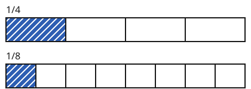
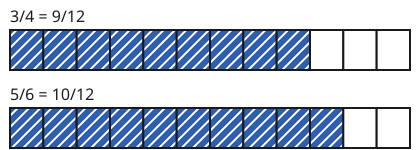

Brüche vergleichen
Mit einem KI-Tutor lernen
Ein KI-Tutor erklärt dir diese Seite und hilft dir bei den Übungen. Wähl deinen Assistenten:
Mit Claude öffnen Mit ChatGPT öffnen Mit Mistral Vibe öffnen
Du nutzt dein eigenes Konto beim Anbieter. Der Assistent ist kein Angebot von lernapps.net: lernapps liefert nur Inhalte und Übungen. Die Wahl gilt für alle Seiten, nur auf diesem Gerät.
Welches Stück ist größer?
Du darfst dir ein Stück Pizza aussuchen: ein Viertel oder ein Achtel. Welches nimmst du? Viele denken: 8 ist mehr als 4, also ist ein Achtel mehr. Schau dir die Streifen an. Für das Gleichnamig-Machen brauchst du Vielfache (Teilbarkeit auf der Lernlandkarte).
Gleicher Zähler, verschiedene Nenner

Beide Streifen sind ein Ganzes. Vergleiche, wie breit das gefärbte Feld jeweils ist.
Quelle: eigene Zeichnung. Lizenz: CC-BY-4.0.Je mehr Teile das Ganze hat, desto kleiner ist jedes Teil. Ein Achtel ist kleiner als ein Viertel, obwohl 8 größer ist als 4. Haben zwei Brüche denselben Zähler, ist der Bruch mit dem kleineren Nenner größer:
Gleichnamig machen
Sind auch die Zähler verschieden, wird es schwerer. Dann machst du die Brüche gleichnamig: Du erweiterst sie so, dass beide denselben Nenner haben. Danach sind die Teile gleich groß, und du vergleichst nur noch die Zähler. Hier siehst du und , beide auf den Nenner 12 erweitert.

Beide Streifen haben zwölf gleich große Felder. Zähle die gefärbten Felder.
Quelle: eigene Zeichnung. Lizenz: CC-BY-4.0.- gleichnamig
Zwei Brüche sind gleichnamig, wenn sie denselben Nenner haben. Dann ist der Bruch mit dem größeren Zähler größer.
Einen gemeinsamen Nenner finden
Als gemeinsamen Nenner nimmst du eine Zahl, in der beide Nenner aufgehen. Das Produkt der Nenner geht immer (4 · 6 = 24). Oft gibt es eine kleinere Zahl: Bei 4 und 6 reicht 12.
Übung
Übung
Lösung
1/5 richtige Antwort
Ein Fünftel ist größer als ein Siebtel: Das Ganze ist in weniger Teile geteilt, also ist jedes Teil größer.
1/7
Ein Siebtel ist kleiner. Je mehr Teile das Ganze hat, desto kleiner ist jedes.
Beide sind gleich groß
Sie haben zwar denselben Zähler, aber die Teile sind verschieden groß: Fünftel sind größer als Siebtel.
Bei gleichem Zähler ist der Bruch mit dem kleineren Nenner größer.
Mehr dazu:
Übung
Lösung
Richtige Antwort: Die Aussage stimmt nicht.
Je größer der Nenner, desto kleiner ist jedes Teil. Ein Achtel ist nur halb so groß wie ein Viertel.
Mehr dazu:
Übung
Lösung
Richtige Antwort: 1. 1/8, 2. 1/4, 3. 1/2
Die Zähler sind gleich. Je kleiner der Nenner, desto größer der Bruch: Ein Achtel ist am kleinsten, ein Halbes am größten.
Mehr dazu:
Übung
Drei Beispielaufgaben, jede mit ihrer Lösung:
Aufgabe Nr. 1
Du vergleichst und . Erweitere beide Brüche auf den Nenner 20. Wie heißt der neue Zähler von ?
Tipp
Mit welcher Zahl musst du 5 malnehmen, um 20 zu bekommen? Nimm den Zähler mit derselben Zahl mal.
Lösung
- 20 : 5 sagt dir, mit welcher Zahl du erweiterst.
- Der neue Zähler ist 8.
Richtige Antwort: 8
Aufgabe Nr. 2
Du vergleichst und . Erweitere beide Brüche auf den Nenner 18. Wie heißt der neue Zähler von ?
Tipp
Mit welcher Zahl musst du 9 malnehmen, um 18 zu bekommen? Nimm den Zähler mit derselben Zahl mal.
Lösung
- 18 : 9 sagt dir, mit welcher Zahl du erweiterst.
- Der neue Zähler ist 8.
Richtige Antwort: 8
Aufgabe Nr. 3
Du vergleichst und . Erweitere beide Brüche auf den Nenner 12. Wie heißt der neue Zähler von ?
Tipp
Mit welcher Zahl musst du 4 malnehmen, um 12 zu bekommen? Nimm den Zähler mit derselben Zahl mal.
Lösung
- 12 : 4 sagt dir, mit welcher Zahl du erweiterst.
- Der neue Zähler ist 9.
Richtige Antwort: 9
Übung
Lösung
3/4 richtige Antwort
Auf den Nenner 12 erweitert: 2/3 = 8/12 und 3/4 = 9/12. 9 ist mehr als 8.
2/3
Auf den Nenner 12 erweitert ist 2/3 = 8/12 und 3/4 = 9/12. Also ist 2/3 kleiner.
Beide sind gleich groß
Auf den Nenner 12 erweitert sind es 8/12 und 9/12, und die sind verschieden.
Mache die Brüche gleichnamig, dann vergleichst du nur noch die Zähler.
Mehr dazu: